| 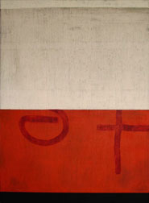 |
Main
Gallery
Home
Sweet Home
June 8 - July 21, 2007
In conjunction with the opening of ICA's newly renovated
space.
The
inaugural exhibition in the new ICA, entitled Home Sweet
Home, features 14 artists who examine the notion of home,
not merely as a physical structure, but as a place formed
by memories and a sense of belonging. Artists include:
Richard Barnes, Mark Bennett, Jim Campbell, Jim Christensen,
Stefan Kurten, Lewis deSoto, Doug Glovaski, Young Kim,
Cassandra C. Jones, Hung Liu, Oliver Michaels, Long Nguyen,
Stephen Sollins and Catherine Wagner.
Image: Doug
Glovaski, Mapping the City 3, oil, 44 x 32 inches.
Image Courtesy of the Artist and Dolby Chadwick Gallery,
SF
|
| 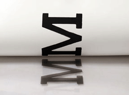 |
Focus
Gallery
Monotype
Marathon 2007
June 8 - June 23, 2007
This
annual educational event and fundraiser is a creative
collaboration with the ICA, Cabrillo College, Foothill
College, Kala Art Institute, Monterey Peninsula College,
Pacific Art League, San Jose State University, and private
printmaking studios throughout the Bay Area. The exhibition
features monotypes by more than 100 artists and culminates
is a silent auction at the ICA.
|
| 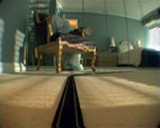 |
The Cardinale Project
Room
Train
by
Oliver Michaels
June 8 - July 28, 2007
This
mesmerizing 14-minute video loop by Oliver Michaels follows
a model train passing through a series of rooms that appear
connected, but are actually from multiple buildings. The
result is an intimate and dislocating experience of interior
spaces.
Image: Oliver Michaels, still from Train, 2003.
Courtesy of the Artist and Shoshana Wayne Gallery, Santa
Monica.
|
|
| 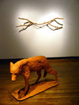 |
Focus
Gallery
Lift
Off:
San Jose State University MFA Exhibiton
June 29 - August 4, 2007
This
summer the ICA will present the 3rd annual San Jose State
University Master of Fine Art Exhibition. This year's
participants are: Jason Adkins, Julia Bradshaw, Jonathan
Brilliant, Carlos Castellanos, Shay Church, Kim Cook,
Sandy Frank, Bruce Gardner, Julie Jacobson, Morgan Konn,
Sarah Lowe, Nalyne Lunarti, Wendy McDermott, Owen Premore,
Valerie Raps, Andrew Reilly, Jim Shurter, Carla Turturici
and Don Wright.
Image: Shay Church, Wolf and Dowsing Rod, 2006,
clay and wood.
|
| 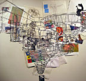 |
Main
Gallery and The Cardinale Project Room
NextNew2007
August 3, 2007 - September 22, 2007
The
ICA's annual exhibition features the next new talent on
the horizon. This year's artists have been chosen by faculty
members from MFA programs throughout California and include:
Binta Ayofemi, Stanford; Jennifer Brandon, Mills College;
Ali Dadgar, UC Berkeley; Tom Mueske, SFAI; Elisabeth Higgins
O'Connor, UC Davis; Amy Rueffert, Mills College; Kim Schoenstadt,
Pitzer College; Ema Sintamarian, SJSU; Susan van der Mellen,
CSUMB; Allison Watkins, SFSU; and others.
Image: Kim Schoenstadt, Discussion Wall 1, 2007,
mixed media.
|
|
| 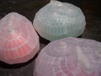 |
Focus
Gallery
Propagation: Mitra Fabian
August 10, 2007 - September 22, 2007
Mitra
Fabian works with Scotch tape, glue or discarded window
blinds to create "organisms" that straddle the
line between beautiful and grotesque; benign and malignant.
She mimics the process of growth within a context of cultural
compromise and expresses ideas about endangered environments
in which culture and nature conflict.
Image: Mitra Fabian, Proliferation Series, 2005,
Mixed media.
|
|
| 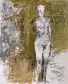 |
Main
and Focus Galleries
27th
Annual Fall Auction
October 5 - 27, 2007
More
than 130 artists donate exceptional works for the ICA's
annual exhibition and fundraiser.
Image: Manuel Neri, Adagio for Mexico No.12, 1993,
Water-based pigments, charcoal and oil pastel on paper,
Courtesy of the Artist and Hackett-Freedman Gallery, San
Francisco.
|
|
| 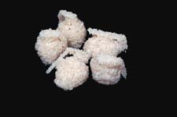 |
Main
Gallery
Landscape
of War
November
10, 2007 - January 19, 2008
The Landscape of War
exhibition illustrates the complex politics of war and
our relationship to it.
Image: Mike Arcega, Terrorice, Rice
and hotglue, Courtesy of the Artist and Heather Marx Gallery,
SF
|
| 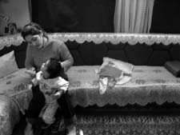 |
Focus
Gallery and Cardinale Project Room
Open Shutters
Iraq
November
10 - January 5, 2008
Organized by Montalvo Arts Center
Through the eyes of these twelve women and one six year
old girl, the exhibition also reflects some of the harsh
realities that face civilian women living in war-torn Iraq
today.
Image: From Lugane's Story, Open Shutters Iraq, Courtesy
of Eugenie Dolberg |
|
 |
|
| 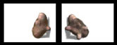 |
John
Slepian: The Kiss
June 1, 2007 - August 11, 2007
John
Slepian creates digital installations that investigate
what it is that makes us feel human. His simplified forms
exhibit identifiable gestures that have illicit emotional
responses.
Image: John Slepian, The Kiss, 2004, 2-channel
video.
|
| 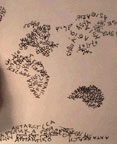 |
In
her video, Asya Reznikov writes the names of the continents
in 23 different languages over the course of 23 minutes
resulting in a drawing of the world. Reznikov's work explores
how culture and language shape our perceptions and understandings
of reality.
Image: Asya Reznikov, still from Mapping, 2004,
dvd. Courtesy of the Artist and Nancy Hoffman Gallery,
New York.
|
| 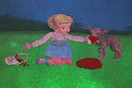 |
Keturah
Cummings: Liten Gygr
August 24 - November 2, 2007
Liten
Gygr tells the strange and sugar-induced
story of the last giantess and her misadventures with a
lovesick god, a mango and a unicorn.
Image: Keturah Cummings, Liten Gygr video still, 2006,
Courtesy of the Artist |
| 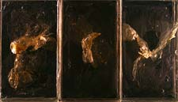 |
Jennifer
Brandon: Fallen
August 24 - November 2, 2007
In
this window installation titled Fallen, a grid of
transparent resin bricks glows with fluid forms of birds
suspended inside of them.
Image: Jennifer Brandon, Fallen, 2007 |
| 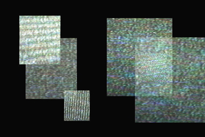 |
Martha
Gorzycki:
Unfurling
reckless echoes
November 9, 2007 - January 19,
2008
Gorzycki's
videos question the politics of mainstream visual culture.
Image: Martha Gorzycki, still from reckless echoes,,
DVD, Courtesy of the Artist
|
| |
|
|